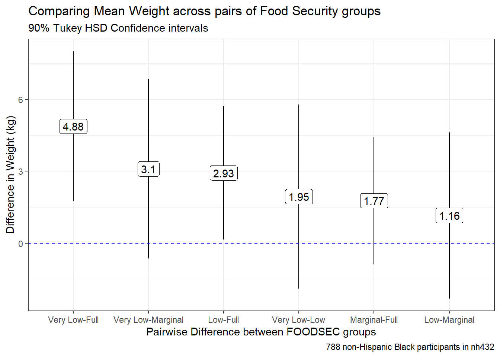

knitr::opts_chunk$set(comment = NA)
library(janitor)
library(broom)
library(car)
library(glue)
library(gt)
library(gtsummary)
library(lmboot)
library(MKinfer)
library(mosaic)
library(naniar)
library(patchwork)
library(rstatix)
library(tidyverse)
theme_set(theme_bw())3 431 Review: Comparing Means
In this Chapter, we will review some key issues about comparing means, mostly drawn from the 431 course. This and the other Chapters labeled “431 Review” show elements of the two studies involved in a “431 Project B” using the pre-pandemic (2017 - March 2020) data from the National Health and Nutrition Examination Survey (NHANES) called nh432 that we developed in Chapter 1 and then summarized in Chapter 2. Note that we’ll ignore the issue of sampling weights and assume a “missing completely at random” (MCAR) mechanism in these “431 Review” chapters, so that we can work with complete cases.
The 431 course notes are at https://thomaselove.github.io/431-notes/ and will remain there until June 1.
3.1 R Setup
3.2 Data Ingest
Since we’ve already got the nh432 file formatted as an R data set, we’ll use that.
nh432 <- read_rds("data/nh432.Rds")3.3 Testing or Summarizing Normality?
As we’ll see, the two most useful strategies for dealing with problematic non-Normality when comparing means are (1) transformation of the outcome to make the assumption of Normality more tenable, and (2) alternate inference approaches (for example, using a bootstrap or rank-based procedure instead of a t test.)
While it is possible to obtain numerical summaries of deviations from Normality, perhaps a measure of skewness (asymmetry) or kurtosis (heavy-tailed behavior), in practical work, I never use such summaries to overrule my assessment of the plots. It’s critical instead to focus on the pictures of a distribution, most especially Normal Q-Q plots.
Perhaps the simplest skewness summary is \(skew_1\) = (mean-median)/(standard deviation), where values below -0.2 are meant to indicate (meaningful) left skew, and values above +0.2 indicate (meaningful) right skew. Unfortunately, this approach works poorly with many distributions (for example, multimodal distributions) and so do many other (more sophisticated) measures1.
It is also possible to develop hypothesis tests of whether a particular batch of data follows a Normal distribution, for example, the Kolmogorov-Smirnov test2, or the Shapiro-Wilk test3, but again, I find these to be without value in practical work and cannot recommend their use.
3.4 Comparing Two Means using Paired Samples
Now, we’ll demonstrate some approaches to comparing two means coming from paired samples. This will include:
- a paired t test (one-sample t test on the paired differences), which we can obtain from a linear model, or from
t.test()
These procedures based on the t distribution for paired samples require that the distribution of the sample paired differences is well-approximated by a Normal model. As an alternative without that requirement, we’ll focus primarily on a bootstrap comparison (not assuming Normality) from boot.t.test(), which comes from the MKinfer package. It is also possible to generate rank-based inference, such as using the Wilcoxon signed rank approach, but this introduces the major weakness of not estimating the population mean (or even the population median.)
We’ll assume a Missing Completely at Random (MCAR) mechanism for missing data, so that a complete case analysis makes sense, and we’ll also use functions from the broom package to tidy our output, and from the gt package to help present it in an attractive table.
3.5 Comparing PULSE1 to PULSE2
We have two measurements of pulse rate (in beats per minute) in nh432 for each participant. Let’s compare the two for all participants with two PULSE readings. Since we have a value of PULSE1 and PULSE2 for each participant, it makes sense to treat these as paired samples, and study the paired differences in pulse rate.
dat1 <- nh432 |> select(SEQN, PULSE1, PULSE2) |>
drop_na() |>
mutate(PULSEDIFF = PULSE2 - PULSE1)
summary(dat1 |> select(-SEQN)) PULSE1 PULSE2 PULSEDIFF
Min. : 38.0 Min. : 37.00 Min. :-22.0000
1st Qu.: 62.0 1st Qu.: 63.00 1st Qu.: -1.0000
Median : 69.0 Median : 70.00 Median : 1.0000
Mean : 70.3 Mean : 70.96 Mean : 0.6533
3rd Qu.: 77.0 3rd Qu.: 78.00 3rd Qu.: 2.0000
Max. :126.0 Max. :121.00 Max. : 26.0000 df_stats(~ PULSE1 + PULSE2 + PULSEDIFF, data = dat1) |>
mutate(across(.cols = c(mean, sd), \(x) num(x, digits = 2))) |>
gt()| response | min | Q1 | median | Q3 | max | mean | sd | n | missing |
|---|---|---|---|---|---|---|---|---|---|
| PULSE1 | 38 | 62 | 69 | 77 | 126 | 70.30 | 11.61 | 3314 | 0 |
| PULSE2 | 37 | 63 | 70 | 78 | 121 | 70.96 | 11.57 | 3314 | 0 |
| PULSEDIFF | -22 | -1 | 1 | 2 | 26 | 0.65 | 3.43 | 3314 | 0 |
3.5.1 Distribution of Paired Differences
p1 <- ggplot(dat1, aes(sample = PULSEDIFF)) +
geom_qq(col = "dodgerblue") + geom_qq_line(col = "navy") +
theme(aspect.ratio = 1) +
labs(title = "Normal Q-Q plot")
p2 <- ggplot(dat1, aes(x = PULSEDIFF)) +
geom_histogram(aes(y = after_stat(density)),
bins = 25, fill = "dodgerblue", col = "white") +
stat_function(fun = dnorm,
args = list(mean = mean(dat1$PULSEDIFF),
sd = sd(dat1$PULSEDIFF)),
col = "navy", linewidth = 1.5) +
labs(title = "Histogram and Normal Density")
p3 <- ggplot(dat1, aes(x = PULSEDIFF, y = "")) +
geom_boxplot(fill = "dodgerblue", outlier.color = "dodgerblue") +
stat_summary(fun = "mean", geom = "point",
shape = 23, size = 3, fill = "white") +
labs(title = "Boxplot with mean", y = "")
p1 + (p2 / p3 + plot_layout(heights = c(4,1))) +
plot_annotation(title = "Pulse 2 - Pulse 1 difference in nh432",
subtitle = glue(nrow(dat1), " NHANES Participants ages 30-59 in nh432 data"))
These data appear to come from a distribution that is essentially symmetric, but extremely heavy-tailed, with many outlier candidates on both the low and high end of the distribution. It seems unwise to assume a Normal distribution for these differences in pulse rate.
3.5.2 Using t.test to obtain a 90% CI for the mean pulse difference
Note that I use 90% as my confidence level here, mostly to make sure that we don’t always simply default to 95% without engaging our brains.
tt1 <- t.test(dat1$PULSEDIFF, conf.level = 0.90)
tt1
One Sample t-test
data: dat1$PULSEDIFF
t = 10.98, df = 3313, p-value < 2.2e-16
alternative hypothesis: true mean is not equal to 0
90 percent confidence interval:
0.5553989 0.7511792
sample estimates:
mean of x
0.6532891 tidy(tt1, conf.int = TRUE, conf = 0.90) |>
select(estimate, low.90 = conf.low, hi.90 = conf.high,
"Paired t" = statistic, p.value, method) |>
mutate(across(.cols = -method, \(x) num(x, digits = 3))) |>
gt() |>
tab_header(title = "Pulse 2 - Pulse 1 Difference Estimate with 90% T-based CI",
subtitle = glue(nrow(dat1), " NHANES Participants ages 30-59 in nh432 data"))| Pulse 2 - Pulse 1 Difference Estimate with 90% T-based CI | |||||
| 3314 NHANES Participants ages 30-59 in nh432 data | |||||
| estimate | low.90 | hi.90 | Paired t | p.value | method |
|---|---|---|---|---|---|
| 0.653 | 0.555 | 0.751 | 10.980 | 0.000 | One Sample t-test |
3.5.3 Using linear regression to obtain a 90% CI for the mean pulse difference
A linear regression model predicting the paired differences with an intercept alone produces the same result as the paired t test.
lm1 <- lm(PULSEDIFF ~ 1, data = dat1)
summary(lm1)
Call:
lm(formula = PULSEDIFF ~ 1, data = dat1)
Residuals:
Min 1Q Median 3Q Max
-22.6533 -1.6533 0.3467 1.3467 25.3467
Coefficients:
Estimate Std. Error t value Pr(>|t|)
(Intercept) 0.6533 0.0595 10.98 <2e-16 ***
---
Signif. codes: 0 '***' 0.001 '**' 0.01 '*' 0.05 '.' 0.1 ' ' 1
Residual standard error: 3.425 on 3313 degrees of freedomtidy(lm1, conf.int = TRUE, conf = 0.90) |>
mutate(method = c("Linear Model")) |>
select(estimate, low.90 = conf.low, hi.90 = conf.high,
"Paired t" = statistic, p.value, method) |>
mutate(across(.cols = -method, \(x) num(x, digits = 3))) |>
gt() |>
tab_header(title = "Pulse 2 - Pulse 1 Difference Estimate with 90% T-based CI",
subtitle = glue(nrow(dat1), " NHANES Participants ages 30-59 in nh432 data"))| Pulse 2 - Pulse 1 Difference Estimate with 90% T-based CI | |||||
| 3314 NHANES Participants ages 30-59 in nh432 data | |||||
| estimate | low.90 | hi.90 | Paired t | p.value | method |
|---|---|---|---|---|---|
| 0.653 | 0.555 | 0.751 | 10.980 | 0.000 | Linear Model |
3.5.4 Using the bootstrap to obtain a 90% CI for the mean pulse difference
This is a better choice than the t test if the distribution of the paired differences veer far away from a Normal distribution, but you are still interested in making inferences about the population mean. This is a different approach to obtaining a bootstrap than I have used in the past, but I prefer it because it works well with the tidy() function in the broom package.
set.seed(4321)
bs1 <- boot.t.test(dat1$PULSEDIFF, conf.level = 0.90,
boot = TRUE, R = 999)
bs1
Bootstrap One Sample t-test
data: dat1$PULSEDIFF
bootstrap p-value < 2.2e-16
bootstrap mean of x (SE) = 0.6554904 (0.05954107)
90 percent bootstrap percentile confidence interval:
0.5554617 0.7526554
Results without bootstrap:
t = 10.98, df = 3313, p-value < 2.2e-16
alternative hypothesis: true mean is not equal to 0
90 percent confidence interval:
0.5553989 0.7511792
sample estimates:
mean of x
0.6532891 tidy(bs1, conf.int = TRUE, conf = 0.90) |>
select(estimate, low.90 = conf.low, hi.90 = conf.high,
"Bootstrap t" = statistic, p.value, method) |>
mutate(across(.cols = -method, \(x) num(x, digits = 3))) |>
gt() |>
tab_header(title = "Pulse 2 - Pulse 1 Difference Estimate with 90% Bootstrap CI",
subtitle = glue(nrow(dat1), " NHANES Participants ages 30-59 in nh432 data"))| Pulse 2 - Pulse 1 Difference Estimate with 90% Bootstrap CI | |||||
| 3314 NHANES Participants ages 30-59 in nh432 data | |||||
| estimate | low.90 | hi.90 | Bootstrap t | p.value | method |
|---|---|---|---|---|---|
| 0.653 | 0.555 | 0.751 | 10.980 | 0.000 | Bootstrap One Sample t-test |
Given our large sample size, it is perhaps not overly surprising that even a small difference in mean pulse rate (0.653 beats per minute) turns out to have a 90% confidence interval well above the value (0) that would occur if there were no difference at all between the groups.
3.5.5 Wilcoxon signed rank approach to comparing pulse rates
We can obtain a 90% confidence interval for the pseudo-median of our paired differences in pulse rate with the Wilcoxon signed rank approach.
wt1 <- wilcox.test(dat1$PULSEDIFF, conf.int = TRUE, conf.level = 0.90)
wt1
Wilcoxon signed rank test with continuity correction
data: dat1$PULSEDIFF
V = 2449203, p-value < 2.2e-16
alternative hypothesis: true location is not equal to 0
90 percent confidence interval:
0.5000466 0.9999290
sample estimates:
(pseudo)median
0.9999809 But this is of limited value, even though it doesn’t assume Normality of the distribution of paired differences, because the summary statistic is a pseudo-median4, which isn’t straightforward to interpret, unless the true distribution of the paired differences is symmetric, in which case the pseudo-median and the median have the same value.
Let’s consider another example using two paired samples to compare means, this time with a somewhat smaller sample size.
3.6 Comparing WEIGHT to ESTWT
We have two assessments of each participant’s weight in nh432: their WEIGHT (as measured using a scale, in kilograms) and their ESTWT (self-reported weight via questionnaire, in pounds.) First, let’s create a data set containing those values, and converting pounds to kilograms for the ESTWT results so that we can compare the two assessments fairly. To shrink the sample size a bit, let’s only look at people whose age is 43, and who describe their overall health as either Good or Fair.
dat2 <- nh432 |> select(SEQN, AGE, SROH, WEIGHT, ESTWT) |>
filter(AGE == 43, SROH %in% c("Good", "Fair")) |>
drop_na() |>
mutate(ESTWTKG = ESTWT*0.45359,
WTDIFF = WEIGHT - ESTWTKG)
glimpse(dat2)Rows: 70
Columns: 7
$ SEQN <chr> "109342", "109602", "109805", "110286", "110645", "111149", "1…
$ AGE <dbl> 43, 43, 43, 43, 43, 43, 43, 43, 43, 43, 43, 43, 43, 43, 43, 43…
$ SROH <fct> Good, Good, Good, Fair, Good, Good, Good, Good, Good, Fair, Go…
$ WEIGHT <dbl> 92.1, 76.5, 133.0, 86.8, 119.3, 74.1, 75.8, 106.8, 102.1, 77.0…
$ ESTWT <dbl> 200, 167, 260, 198, 230, 145, 167, 240, 223, 172, 150, 265, 22…
$ ESTWTKG <dbl> 90.71800, 75.74953, 117.93340, 89.81082, 104.32570, 65.77055, …
$ WTDIFF <dbl> 1.38200, 0.75047, 15.06660, -3.01082, 14.97430, 8.32945, 0.050…df_stats(~ WEIGHT + ESTWTKG + WTDIFF, data = dat2) |>
mutate(across(.cols = -c(response, n, missing), \(x) num(x , digits = 3))) |>
gt()| response | min | Q1 | median | Q3 | max | mean | sd | n | missing |
|---|---|---|---|---|---|---|---|---|---|
| WEIGHT | 36.900 | 74.525 | 89.400 | 106.175 | 204.600 | 93.040 | 29.211 | 70 | 0 |
| ESTWTKG | 45.359 | 74.842 | 89.130 | 103.759 | 204.115 | 92.532 | 27.869 | 70 | 0 |
| WTDIFF | -9.871 | -2.256 | -0.028 | 1.923 | 15.067 | 0.508 | 4.671 | 70 | 0 |
3.6.1 Plotting The Paired Difference in Weight
p1 <- ggplot(dat2, aes(sample = WTDIFF)) +
geom_qq(col = "seagreen") + geom_qq_line(col = "deeppink") +
theme(aspect.ratio = 1) +
labs(title = "Normal Q-Q plot")
p2 <- ggplot(dat2, aes(x = WTDIFF)) +
geom_histogram(aes(y = after_stat(density)),
bins = 15, fill = "seagreen", col = "white") +
stat_function(fun = dnorm,
args = list(mean = mean(dat2$WTDIFF),
sd = sd(dat2$WTDIFF)),
col = "deeppink", linewidth = 1.5) +
labs(title = "Histogram and Normal Density")
p3 <- ggplot(dat2, aes(x = WTDIFF, y = "")) +
geom_boxplot(fill = "seagreen", outlier.color = "seagreen") +
stat_summary(fun = "mean", geom = "point",
shape = 23, size = 3, fill = "white") +
labs(title = "Boxplot with mean", y = "")
p1 + (p2 / p3 + plot_layout(heights = c(4,1))) +
plot_annotation(title = "Measured - Self-reported Weight (in kilograms)",
subtitle = glue(nrow(dat2), " participants in Good or Fair Health aged 43 in nh432"))As we saw with the differences in pulse rate, the differences in weight for this sample appear to come from a distribution that might be symmetric, but that still has several outlier candidates, especially on the high end of the distribution. We may want to consider whether the assumption of a t-based confidence interval is reasonable here, and whether we might be better off using a bootstrap approach.
3.6.2 t.test 90% CI for the mean weight difference
tt2 <- t.test(dat2$WTDIFF, conf.level = 0.90)
tidy(tt2, conf.int = TRUE, conf = 0.90) |>
select(estimate, low.90 = conf.low, hi.90 = conf.high,
"Paired t" = statistic, p.value, method) |>
mutate(across(.cols = -method, \(x) num(x, digits = 3))) |>
gt() |>
tab_header(title = "Measured - Self-reported Weight with 90% T-based CI",
subtitle = glue(nrow(dat2), " NHANES Participants aged 43 in Good or Fair Health in nh432 data"))| Measured - Self-reported Weight with 90% T-based CI | |||||
| 70 NHANES Participants aged 43 in Good or Fair Health in nh432 data | |||||
| estimate | low.90 | hi.90 | Paired t | p.value | method |
|---|---|---|---|---|---|
| 0.508 | -0.423 | 1.438 | 0.909 | 0.366 | One Sample t-test |
3.6.3 Linear Regression: 90% CI for mean weight difference
lm2 <- lm(WTDIFF ~ 1, data = dat2)
tidy(lm2, conf.int = TRUE, conf = 0.90) |>
mutate(method = c("Linear Model")) |>
select(estimate, low.90 = conf.low, hi.90 = conf.high,
"Paired t" = statistic, p.value, method) |>
mutate(across(.cols = -method, \(x) num(x, digits = 3))) |>
gt() |>
tab_header(title = "Measured - Self-reported Weight with 90% T-based CI",
subtitle = glue(nrow(dat2), " NHANES Participants aged 43 in Good or Fair Health in nh432 data"))| Measured - Self-reported Weight with 90% T-based CI | |||||
| 70 NHANES Participants aged 43 in Good or Fair Health in nh432 data | |||||
| estimate | low.90 | hi.90 | Paired t | p.value | method |
|---|---|---|---|---|---|
| 0.508 | -0.423 | 1.438 | 0.909 | 0.366 | Linear Model |
3.6.4 Bootstrap 90% CI for the mean weight difference
set.seed(4322)
bs2 <- boot.t.test(dat2$WTDIFF, conf.level = 0.90,
boot = TRUE, R = 999)
tidy(bs2, conf.int = TRUE, conf = 0.90) |>
select(estimate, low.90 = conf.low, hi.90 = conf.high,
"Bootstrap t" = statistic, p.value, method) |>
mutate(across(.cols = -method, \(x) num(x, digits = 3))) |>
gt() |>
tab_header(title = "Measured - Self-reported Weight",
subtitle = "with 90% Bootstrap CI") |>
tab_footnote(footnote = glue(nrow(dat1), " NHANES Participants age 43 in Good or Fair Health in nh432 data"))| Measured - Self-reported Weight | |||||
| with 90% Bootstrap CI | |||||
| estimate | low.90 | hi.90 | Bootstrap t | p.value | method |
|---|---|---|---|---|---|
| 0.508 | -0.423 | 1.438 | 0.909 | 0.366 | Bootstrap One Sample t-test |
| 3314 NHANES Participants age 43 in Good or Fair Health in nh432 data | |||||
In light of the clear issue with outliers in the plots of the weight differences, I think I would choose the bootstrap confidence interval, which clearly includes both negative and positive values as plausible estimates of the population mean difference.
3.6.5 Wilcoxon signed rank approach to comparing weight estimates
We can obtain a 90% confidence interval for the pseudo-median of our paired differences in weight with the Wilcoxon signed rank approach.
wt2 <- wilcox.test(dat2$WTDIFF, conf.int = TRUE, conf.level = 0.90)
wt2
Wilcoxon signed rank test with continuity correction
data: dat2$WTDIFF
V = 1262, p-value = 0.9115
alternative hypothesis: true location is not equal to 0
90 percent confidence interval:
-0.6347756 0.7941699
sample estimates:
(pseudo)median
0.06155979 But this is of limited value, even though it doesn’t assume Normality of the distribution of paired differences, because the summary statistic is a pseudo-median5, which isn’t straightforward to interpret, unless the true distribution of the paired differences is symmetric, in which case the pseudo-median and the median have the same value.
3.7 Comparing Two Means using Independent Samples
Now, we’ll demonstrate some approaches to comparing two means coming from independent samples. This will include:
- a pooled t test (t test assuming equal population variances), which we can obtain from a linear model, or from
t.test() - a Welch t test (t test not assuming equal population variances), from
t.test()
Each of these t tests requires the distribution of each of our two independent samples to be well-approximated by a Normal model. As an alternative without that requirement, we’ll focus on a bootstrap comparison (not assuming equal variances or Normality) from boot.t.test() (again from the MKinfer package.) Once more, it is also possible to generate rank-based inference, such as using the Wilcoxon-Mann-Whitney rank sum approach, but again this does not provide us with estimates of either the difference in population means or medians, which limits its utility.
3.8 Comparing White Blood Cell Count by Hospitalization Status
Now, we’ll use independent samples to compare subjects who were hospitalized in the past year to those who were not, in terms of their white blood cell count. The normal range of WBCs in the blood is 4.5 to 11 on the scale (1000 cells per microliter) our data is available.
3.8.1 Exploring the Data
dat3 <- nh432 |>
select(SEQN, HOSPITAL, WBC) |>
drop_na()
ggplot(dat3, aes(x = factor(HOSPITAL), y = WBC)) +
geom_violin(aes(fill = factor(HOSPITAL))) +
geom_boxplot(width = 0.3, notch = TRUE) +
stat_summary(aes(fill = factor(HOSPITAL)), fun = "mean", geom = "point",
shape = 23, size = 3) +
guides(fill = "none", col = "none") +
scale_fill_viridis_d(option = "cividis", alpha = 0.3) +
coord_flip() +
labs(x = "Hospitalized in Past Year? (0 = No, 1 = Yes)",
y = "White blood cell count (1000 cells / uL)",
title = "White Blood Cell Count by Hospitalization Status",
subtitle = glue(nrow(dat3), " NHANES participants in nh432"))
Each of these distributions shows some signs of right skew, or at least more than a few outlier candidates on the upper end of the white blood cell count’s distribution, according to the boxplot. A pair of Normal Q-Q plots should help clarify issues for us.
ggplot(dat3, aes(sample = WBC)) +
geom_qq(aes(col = factor(HOSPITAL))) + geom_qq_line(col = "red") +
facet_wrap(~ HOSPITAL, labeller = "label_both") +
guides(col = "none") +
scale_color_viridis_d(option = "cividis", end = 0.5) +
labs(x = "Expectation Under Standard Normal Distribution",
y = "Observed White Blood Cell Count (1000 cells/uL)",
title = "Normal Q-Q plots of White Blood Cell Count",
subtitle = "By Hospitalization Status in the Past Year",
caption = glue(nrow(dat3), " NHANES participants in nh432"))
It seems unreasonable to assume that each of these samples comes from a distribution that is well-approximated by the Normal. There’s just too much skew here. Here are some key numerical summaries of the data in each sample.
favstats(WBC ~ HOSPITAL, data = dat3) |>
mutate(across(.cols = c(mean, sd), \(x) num(x, digits = 3))) |>
gt()| HOSPITAL | min | Q1 | median | Q3 | max | mean | sd | n | missing |
|---|---|---|---|---|---|---|---|---|---|
| 0 | 2.3 | 5.7 | 7.0 | 8.4 | 22.8 | 7.246 | 2.170 | 3430 | 0 |
| 1 | 2.5 | 5.6 | 6.9 | 8.7 | 17.1 | 7.332 | 2.392 | 325 | 0 |
3.8.2 Pooled t test (assumes equal variances) via linear model
The pooled t test for comparison of two population means using independent samples assumes:
- that the WBC (outcome) in each of the two HOSPITAL (exposure) groups follows a Normal distribution, and
- that the population variances are equal in the two groups
The “equal population variances” assumption can be relaxed and a pooled t test used if we have a balanced design, with the same number of subjects in each exposure group.
In our setting, we shouldn’t be particularly comfortable with the assumption of Normality, as mentioned above. Were we able to get past that, though, we can see that the two distributions have fairly similar sample variances (remember this is just the square of the standard deviation.) The sample sizes are wildly different, with many more non-hospitalized subjects than hospitalized ones.
For completeness, though, we’ll start by running the pooled t test.
lm3 <- lm(WBC ~ HOSPITAL, data = dat3)
summary(lm3)
Call:
lm(formula = WBC ~ HOSPITAL, data = dat3)
Residuals:
Min 1Q Median 3Q Max
-4.9463 -1.5463 -0.3463 1.1537 15.5537
Coefficients:
Estimate Std. Error t value Pr(>|t|)
(Intercept) 7.24633 0.03740 193.760 <2e-16 ***
HOSPITAL 0.08567 0.12712 0.674 0.5
---
Signif. codes: 0 '***' 0.001 '**' 0.01 '*' 0.05 '.' 0.1 ' ' 1
Residual standard error: 2.19 on 3753 degrees of freedom
Multiple R-squared: 0.000121, Adjusted R-squared: -0.0001454
F-statistic: 0.4542 on 1 and 3753 DF, p-value: 0.5004confint(lm3, level = 0.90) 5 % 95 %
(Intercept) 7.1847964 7.3078567
HOSPITAL -0.1234734 0.2948204tidy(lm3, conf.int = TRUE, conf.level = 0.90) |>
filter(term == "HOSPITAL") |>
mutate(method = "Pooled t") |>
select(estimate, low.90 = conf.low, hi.90 = conf.high,
"Pooled t" = statistic, p.value, method) |>
mutate(across(.cols = -method, \(x) num(x, digits = 3))) |>
gt() |>
tab_header(title = "White Blood Cell Count (Hospitalized - Non-Hospitalized)",
subtitle = "with 90% Pooled t-based CI via Linear Model") |>
tab_footnote(footnote = glue(nrow(dat3), " NHANES Participants ages 30-59 in nh432 data"))| White Blood Cell Count (Hospitalized - Non-Hospitalized) | |||||
| with 90% Pooled t-based CI via Linear Model | |||||
| estimate | low.90 | hi.90 | Pooled t | p.value | method |
|---|---|---|---|---|---|
| 0.086 | -0.123 | 0.295 | 0.674 | 0.500 | Pooled t |
| 3755 NHANES Participants ages 30-59 in nh432 data | |||||
3.8.3 Pooled t test (assumes equal variances) via t.test
Note that this approach estimates the difference with Not Hospitalized - Hospitalized, as opposed to the approach used in the linear model. Be careful to check the sample estimates provided in your output against the original summary of the sample data to avoid making a mistake.
tt3p <- t.test(WBC ~ HOSPITAL, data = dat3, var.equal = TRUE, conf.level = 0.90)
tt3p
Two Sample t-test
data: WBC by HOSPITAL
t = -0.67395, df = 3753, p-value = 0.5004
alternative hypothesis: true difference in means between group 0 and group 1 is not equal to 0
90 percent confidence interval:
-0.2948204 0.1234734
sample estimates:
mean in group 0 mean in group 1
7.246327 7.332000 tidy(tt3p, conf.int = TRUE, conf.level = 0.90) |>
select(estimate, low.90 = conf.low, hi.90 = conf.high,
"Pooled t" = statistic, p.value, method) |>
mutate(across(.cols = -method, \(x) num(x, digits = 3))) |>
gt() |>
tab_header(title = "White Blood Cell Count (Non-Hospitalized minus Hospitalized)",
subtitle = "with 90% Pooled t-based Confidence Interval") |>
tab_footnote(footnote = glue(nrow(dat3), " NHANES Participants ages 30-59 in nh432 data"))| White Blood Cell Count (Non-Hospitalized minus Hospitalized) | |||||
| with 90% Pooled t-based Confidence Interval | |||||
| estimate | low.90 | hi.90 | Pooled t | p.value | method |
|---|---|---|---|---|---|
| -0.086 | -0.295 | 0.123 | -0.674 | 0.500 | Two Sample t-test |
| 3755 NHANES Participants ages 30-59 in nh432 data | |||||
Again, note that the t.test() approach estimates Non-Hospitalized - Hospitalized (so that the sample mean is negative.)
3.8.4 Welch t test (doesn’t assume equal variance) via t.test
The Welch t test (which is actually the default t.test in R) assumes that the two groups each follow a Normal distribution, but does not require that those distributions have the same population variance.
tt3w <- t.test(WBC ~ HOSPITAL, data = dat3, conf.level = 0.90)
tt3w
Welch Two Sample t-test
data: WBC by HOSPITAL
t = -0.6218, df = 376.28, p-value = 0.5345
alternative hypothesis: true difference in means between group 0 and group 1 is not equal to 0
90 percent confidence interval:
-0.3128672 0.1415202
sample estimates:
mean in group 0 mean in group 1
7.246327 7.332000 tidy(tt3w, conf.int = TRUE, conf.level = 0.90) |>
select(estimate, low.90 = conf.low, hi.90 = conf.high,
"Welch t" = statistic, p.value, method) |>
mutate(across(.cols = -method, \(x) num(x, digits = 3))) |>
gt() |>
tab_header(title = "White Blood Cell Count (Non-Hospitalized minus Hospitalized)",
subtitle = "with 90% Welch t-based Confidence Interval") |>
tab_footnote(footnote = glue(nrow(dat3), " NHANES Participants ages 30-59 in nh432 data"))| White Blood Cell Count (Non-Hospitalized minus Hospitalized) | |||||
| with 90% Welch t-based Confidence Interval | |||||
| estimate | low.90 | hi.90 | Welch t | p.value | method |
|---|---|---|---|---|---|
| -0.086 | -0.313 | 0.142 | -0.622 | 0.534 | Welch Two Sample t-test |
| 3755 NHANES Participants ages 30-59 in nh432 data | |||||
3.8.5 Bootstrap comparison of WBC by HOSPITAL
The bootstrap approach is appealing in part because it neither assumes Normality or equal population variances.
set.seed(4323)
bs3 <- boot.t.test(WBC ~ HOSPITAL, data = dat3,
R = 999, conf.level = 0.90)
bs3
Bootstrap Welch Two Sample t-test
data: WBC by HOSPITAL
bootstrap p-value = 0.5325
bootstrap difference of means (SE) = -0.08734076 (0.1376246)
90 percent bootstrap percentile confidence interval:
-0.3137606 0.1414317
Results without bootstrap:
t = -0.6218, df = 376.28, p-value = 0.5345
alternative hypothesis: true difference in means is not equal to 0
90 percent confidence interval:
-0.3128672 0.1415202
sample estimates:
mean in group 0 mean in group 1
7.246327 7.332000 tidy(bs3, conf.int = TRUE, conf.level = 0.90) |>
mutate(diff = estimate1 - estimate2) |>
select(est1 = estimate1, est2 = estimate2, diff,
low.90 = conf.low, hi.90 = conf.high,
p.value, method) |>
mutate(across(.cols = -method, \(x) num(x, digits = 3))) |>
gt() |>
tab_header(title = "White Blood Cell Count (Non-Hospitalized minus Hospitalized)",
subtitle = "with 90% Bootstrap Confidence Interval") |>
tab_footnote(footnote = glue(nrow(dat3), " NHANES Participants ages 30-59 in nh432 data"))| White Blood Cell Count (Non-Hospitalized minus Hospitalized) | ||||||
| with 90% Bootstrap Confidence Interval | ||||||
| est1 | est2 | diff | low.90 | hi.90 | p.value | method |
|---|---|---|---|---|---|---|
| 7.246 | 7.332 | -0.086 | -0.313 | 0.142 | 0.534 | Bootstrap Welch Two Sample t-test |
| 3755 NHANES Participants ages 30-59 in nh432 data | ||||||
In any case, though, we come to the same basic conclusion - both positive and negative differences in WBC count are plausible.
Given the huge imbalance between the two groups in terms of sample size, and the apparent skew in the distribution of each sample, I would probably be most comfortable with the bootstrap approach here than the t-based intervals.
3.8.6 Transforming the WBC Counts
Since the White Blood Cell counts are far from Normally distributed, and in fact appear to be substantially skewed (asymmetric) we might want to consider a transformation of the data. The Box-Cox approach can be used to suggest potential transformations even in a simple case like this. We can use the boxCox() function from the car package, for example.
m3 <- lm(WBC ~ HOSPITAL, data = dat3)
boxCox(m3)The estimated power (\(\lambda\)) shown in the plot is close to 0. The ladder of power transformations looks like this:
| $ | Transformation | Formula |
|---|---|---|
| -2 | inverse square | \(1/y^2\) |
| -1 | inverse | \(1/y\) |
| -0.5 | inverse square root | \(1/\sqrt{y}\) |
| 0 | logarithm | \(log y\) |
| 0.5 | square root | \(\sqrt{y}\) |
| 1 | no transformation | y |
| 2 | square | \(y^2\) |
| 3 | cube | \(y^3\) |
So in this case, the Box-Cox approach is suggesting we try the logarithm (we use the natural logarithm, with base e, here) of WBC.
Let’s redraw our Normal Q-Q plots with this transformation applied.
ggplot(dat3, aes(sample = log(WBC))) +
geom_qq(aes(col = factor(HOSPITAL))) + geom_qq_line(col = "red") +
facet_wrap(~ HOSPITAL, labeller = "label_both") +
guides(col = "none") +
scale_color_viridis_d(option = "cividis", end = 0.5) +
labs(x = "Expectation Under Standard Normal Distribution",
y = "Log of White Blood Cell Count (1000 cells/uL)",
title = "Normal Q-Q plots of log(WBC)",
subtitle = "By Hospitalization Status in the Past Year",
caption = glue(nrow(dat3), " NHANES participants in nh432"))The assumption of Normality now looks much more plausible for each of our samples. So we might try building a 90% confidence interval for the mean of log(WBC), as follows:
favstats(log(WBC) ~ HOSPITAL, data = dat3) |>
mutate(across(.cols = -c(HOSPITAL, n, missing), \(x) num(x, digits = 3))) |>
gt() |>
tab_header(title = "log(WBC) by Hospitalization Status",
subtitle = "NHANES participants in nh432")| log(WBC) by Hospitalization Status | |||||||||
| NHANES participants in nh432 | |||||||||
| HOSPITAL | min | Q1 | median | Q3 | max | mean | sd | n | missing |
|---|---|---|---|---|---|---|---|---|---|
| 0 | 0.833 | 1.740 | 1.946 | 2.128 | 3.127 | 1.938 | 0.293 | 3430 | 0 |
| 1 | 0.916 | 1.723 | 1.932 | 2.163 | 2.839 | 1.941 | 0.322 | 325 | 0 |
We see that there’s essentially no difference at all in the means of the log(WBC) values across the two levels of hospitalization status.
tt3log <- t.test(log(WBC) ~ HOSPITAL, data = dat3, var.equal = TRUE, conf.level = 0.90)
tidy(tt3log, conf.int = TRUE, conf.level = 0.90) |>
select(estimate1, estimate2, estimate, conf.low, conf.high, p.value)# A tibble: 1 × 6
estimate1 estimate2 estimate conf.low conf.high p.value
<dbl> <dbl> <dbl> <dbl> <dbl> <dbl>
1 1.94 1.94 -0.00320 -0.0314 0.0250 0.852Let’s consider a second example for comparing means from independent samples.
3.9 Comparing Waist Circumference by Sleep Trouble
Now, we’ll restrict ourselves to NHANES participants who rated their overall health as “Fair”, and we’ll compare the mean waist circumference (WAIST, in cm) of people in that group who responded Yes (vs. No) to the question of whether they had told a doctor that they had trouble sleeping (gathered in the SLPTROUB variable.)
3.9.1 Summarizing the Data
dat4 <- nh432 |>
select(SEQN, SROH, SLPTROUB, WAIST) |>
filter(SROH == "Fair") |>
drop_na()
ggplot(dat4, aes(x = factor(SLPTROUB), y = WAIST)) +
geom_violin(aes(fill = factor(SLPTROUB))) +
geom_boxplot(width = 0.3, notch = TRUE) +
stat_summary(fill = "red", fun = "mean", geom = "point",
shape = 23, size = 3) +
guides(fill = "none", col = "none") +
scale_fill_brewer(palette = "Accent") +
labs(x = "Reported Sleep Trouble to a Doctor? (0 = No, 1 = Yes)",
y = "Waist circumference (cm)",
title = "Waist Circumference by Sleep Trouble",
subtitle = glue(nrow(dat4), " NHANES participants in Fair health in nh432"))
ggplot(dat4, aes(sample = WAIST)) +
geom_qq(aes(col = factor(SLPTROUB))) + geom_qq_line(col = "red") +
facet_wrap(~ SLPTROUB, labeller = "label_both") +
guides(col = "none") +
scale_color_brewer(palette = "Accent") +
labs(x = "Expectation Under Standard Normal Distribution",
y = "Observed Waist Circumference (in cm)",
title = "Normal Q-Q plots of Waist Circumference",
subtitle = "By Reported Sleep Trouble",
caption = glue(nrow(dat4), " NHANES participants in Fair health in nh432"))Here’s a situation where we might be willing to consider a t test, since a Normal distribution is a much better fit for the data in each of our two samples. Let’s look at some brief numerical summaries, too.
favstats(WAIST ~ SLPTROUB, data = dat4) |>
mutate(across(.cols = c(mean, sd), \(x) num(x, digits = 2))) |>
gt()| SLPTROUB | min | Q1 | median | Q3 | max | mean | sd | n | missing |
|---|---|---|---|---|---|---|---|---|---|
| 0 | 65.8 | 91.7 | 102.1 | 117.5 | 178 | 104.71 | 18.35 | 425 | 0 |
| 1 | 69.6 | 97.4 | 109.4 | 124.0 | 166 | 110.69 | 18.86 | 309 | 0 |
3.9.2 Pooled t test (assumes equal variances) via linear model
Here’s the pooled t test via linear model.
lm4 <- lm(WAIST ~ SLPTROUB, data = dat4)
summary(lm4)
Call:
lm(formula = WAIST ~ SLPTROUB, data = dat4)
Residuals:
Min 1Q Median 3Q Max
-41.093 -13.293 -2.293 12.790 73.290
Coefficients:
Estimate Std. Error t value Pr(>|t|)
(Intercept) 104.7099 0.9006 116.27 < 2e-16 ***
SLPTROUB 5.9830 1.3881 4.31 1.85e-05 ***
---
Signif. codes: 0 '***' 0.001 '**' 0.01 '*' 0.05 '.' 0.1 ' ' 1
Residual standard error: 18.57 on 732 degrees of freedom
Multiple R-squared: 0.02475, Adjusted R-squared: 0.02342
F-statistic: 18.58 on 1 and 732 DF, p-value: 1.853e-05confint(lm4, level = 0.90) 5 % 95 %
(Intercept) 103.226621 106.193144
SLPTROUB 3.696944 8.269052tidy(lm4, conf.int = TRUE, conf.level = 0.90) |>
filter(term == "SLPTROUB") |>
mutate(method = "Pooled t") |>
select(estimate, low.90 = conf.low, hi.90 = conf.high,
"Pooled t" = statistic, p.value, method) |>
mutate(across(.cols = -method, \(x) num(x, digits = 2))) |>
gt() |>
tab_header(title = "Waist Circumference by Sleep Trouble",
subtitle = "with 90% Pooled t-based CI via Linear Model") |>
tab_footnote(footnote = glue(nrow(dat4), " NHANES Participants in Fair Health in nh432 data"))| Waist Circumference by Sleep Trouble | |||||
| with 90% Pooled t-based CI via Linear Model | |||||
| estimate | low.90 | hi.90 | Pooled t | p.value | method |
|---|---|---|---|---|---|
| 5.98 | 3.70 | 8.27 | 4.31 | 0.00 | Pooled t |
| 734 NHANES Participants in Fair Health in nh432 data | |||||
3.9.3 Pooled t test (assumes equal variances) via t.test
tt4p <- t.test(WAIST ~ SLPTROUB, data = dat4, var.equal = TRUE, conf.level = 0.90)
tt4p
Two Sample t-test
data: WAIST by SLPTROUB
t = -4.3103, df = 732, p-value = 1.853e-05
alternative hypothesis: true difference in means between group 0 and group 1 is not equal to 0
90 percent confidence interval:
-8.269052 -3.696944
sample estimates:
mean in group 0 mean in group 1
104.7099 110.6929 tidy(tt4p, conf.int = TRUE, conf.level = 0.90) |>
select(estimate, low.90 = conf.low, hi.90 = conf.high,
"Pooled t" = statistic, p.value, method) |>
mutate(across(.cols = -method, \(x) num(x , digits = 2))) |>
gt() |>
tab_header(title = "Waist Circumference by Sleep Trouble",
subtitle = "with 90% Pooled t-based Confidence Interval") |>
tab_footnote(footnote = glue(nrow(dat4), " NHANES Participants in Fair Health in nh432 data"))| Waist Circumference by Sleep Trouble | |||||
| with 90% Pooled t-based Confidence Interval | |||||
| estimate | low.90 | hi.90 | Pooled t | p.value | method |
|---|---|---|---|---|---|
| -5.98 | -8.27 | -3.70 | -4.31 | 0.00 | Two Sample t-test |
| 734 NHANES Participants in Fair Health in nh432 data | |||||
3.9.4 Welch t test (doesn’t assume equal variance) via t.test
tt4w <- t.test(WAIST ~ SLPTROUB, data = dat4, conf.level = 0.90)
tt4w
Welch Two Sample t-test
data: WAIST by SLPTROUB
t = -4.2919, df = 653.24, p-value = 2.04e-05
alternative hypothesis: true difference in means between group 0 and group 1 is not equal to 0
90 percent confidence interval:
-8.279237 -3.686759
sample estimates:
mean in group 0 mean in group 1
104.7099 110.6929 tidy(tt4w, conf.int = TRUE, conf.level = 0.90) |>
select(estimate, low.90 = conf.low, hi.90 = conf.high,
"Welch t" = statistic, p.value, method) |>
mutate(across(.cols = -method, \(x) num(x, digits = 2))) |>
gt() |>
tab_header(title = "Waist Circumference by Sleep Trouble",
subtitle = "with 90% Welch t-based Confidence Interval") |>
tab_footnote(footnote = glue(nrow(dat4), " NHANES Participants in Fair Health in nh432 data"))| Waist Circumference by Sleep Trouble | |||||
| with 90% Welch t-based Confidence Interval | |||||
| estimate | low.90 | hi.90 | Welch t | p.value | method |
|---|---|---|---|---|---|
| -5.98 | -8.28 | -3.69 | -4.29 | 0.00 | Welch Two Sample t-test |
| 734 NHANES Participants in Fair Health in nh432 data | |||||
3.9.5 Bootstrap comparison of WAIST by SLPTROUB
set.seed(4324)
bs4 <- boot.t.test(WAIST ~ SLPTROUB, data = dat4,
R = 999, conf.level = 0.90)
bs4
Bootstrap Welch Two Sample t-test
data: WAIST by SLPTROUB
bootstrap p-value < 2.2e-16
bootstrap difference of means (SE) = -5.991814 (1.389937)
90 percent bootstrap percentile confidence interval:
-8.207833 -3.747965
Results without bootstrap:
t = -4.2919, df = 653.24, p-value = 2.04e-05
alternative hypothesis: true difference in means is not equal to 0
90 percent confidence interval:
-8.279237 -3.686759
sample estimates:
mean in group 0 mean in group 1
104.7099 110.6929 tidy(bs4, conf.int = TRUE, conf.level = 0.90) |>
mutate(diff = estimate1 - estimate2) |>
select(est1 = estimate1, est2 = estimate2, diff,
low.90 = conf.low, hi.90 = conf.high,
p.value, method) |>
mutate(across(.cols = -method, \(x) num(x, digits = 2))) |>
gt() |>
tab_header(title = "Waist Circumference by Sleep Trouble",
subtitle = "with 90% Bootstrap Confidence Interval") |>
tab_footnote(footnote = glue(nrow(dat4), " NHANES Participants in Fair Health in nh432 data"))| Waist Circumference by Sleep Trouble | ||||||
| with 90% Bootstrap Confidence Interval | ||||||
| est1 | est2 | diff | low.90 | hi.90 | p.value | method |
|---|---|---|---|---|---|---|
| 104.71 | 110.69 | -5.98 | -8.28 | -3.69 | 0.00 | Bootstrap Welch Two Sample t-test |
| 734 NHANES Participants in Fair Health in nh432 data | ||||||
3.9.6 Wilcoxon-Mann-Whitney Rank Sum Approach
The Wilcoxon-Mann-Whitney rank sum approach also allows us (like the bootstrap) to avoid the assumptions of Normality and equal population variances, but at the cost of no longer yielding direct inference about the population mean.
wt4 <- wilcox.test(WAIST ~ SLPTROUB, data = dat4,
conf.int = TRUE, conf.level = 0.90, paired = FALSE)
wt4
Wilcoxon rank sum test with continuity correction
data: WAIST by SLPTROUB
W = 53322, p-value = 1.355e-05
alternative hypothesis: true location shift is not equal to 0
90 percent confidence interval:
-8.599997 -3.900026
sample estimates:
difference in location
-6.299963 Note that the estimated “difference in location” here is not the difference in the medians across the two groups, but instead the median of the difference between a sample from the SLPTROUB = Yes group and a sample from the SLPTROUB = No group.
Just to prove my point, here are the sample median WAIST results in the two SLPTROUB groups. You can see that the difference between these medians does not match the “difference in location” estimate from the Wilcoxon-Mann-Whitney rank sum output.
dat4 |> group_by(SLPTROUB) |> summarise(median(WAIST))# A tibble: 2 × 2
SLPTROUB `median(WAIST)`
<dbl> <dbl>
1 0 102.
2 1 109.In conclusion, the confidence intervals (from any of these approaches) suggest that plausible means of waist circumference are around 3-8 centimeters larger in the “told Dr. about sleep problems” group, which I suppose isn’t especially surprising, at least in terms of its direction.
3.10 Comparing 3 Means using Independent Samples: Systolic BP by Weight Goal
We’ll compare systolic blood pressure means across the three samples defined by WTGOAL (goal is to weigh more, less or stay about the same), restricting to our participants of Hispanic or Latinx ethnicity in nh432.
dat5 <- nh432 |>
select(SEQN, RACEETH, SBP, WTGOAL) |>
filter(RACEETH == "Hispanic") |>
drop_na()3.10.1 Summarizing SBP by WTGOAL
ggplot(dat5, aes(x = SBP, y = WTGOAL)) +
geom_violin(aes(fill = WTGOAL)) +
geom_boxplot(width = 0.3, notch = TRUE) +
guides(fill = "none") +
labs(title = "Comparing Mean Systolic BP by Weight Goal",
subtitle = glue("among ", nrow(dat5), " Hispanic participants in nh432"),
x = "Systolic Blood Pressure (mm Hg)", y = "Weight Goal")
favstats(SBP ~ WTGOAL, data = dat5) |>
as_tibble() |>
mutate(across(.cols = c("mean", "sd"), \(x) num(x, digits = 2))) |>
gt()| WTGOAL | min | Q1 | median | Q3 | max | mean | sd | n | missing |
|---|---|---|---|---|---|---|---|---|---|
| More | 84 | 104.5 | 114.0 | 123 | 150 | 114.08 | 14.76 | 36 | 0 |
| Same | 87 | 107.0 | 116.5 | 128 | 200 | 119.26 | 16.49 | 188 | 0 |
| Less | 80 | 109.0 | 119.0 | 131 | 199 | 120.70 | 17.17 | 564 | 0 |
The analysis of variance is our primary tool for comparing more than two means (this is the extension of the pooled t test, with similar assumptions.) So the assumptions we might want to think about here are:
- SBP in each Weight Goal group is assumed to follow a Normal distribution
- SBP in each Weight Goal group is assumed to have the same population variance
The ANOVA, however, is far more robust to minor violations of these assumptions than is the pooled t test. So we might go ahead and fit the ANOVA model anyway, despite the apparent right skew in the “Less” group.
3.10.2 Fitting an ANOVA Model
m5 <- lm(SBP ~ WTGOAL, data = dat5)
anova(m5)Analysis of Variance Table
Response: SBP
Df Sum Sq Mean Sq F value Pr(>F)
WTGOAL 2 1639 819.45 2.8656 0.05754 .
Residuals 785 224477 285.96
---
Signif. codes: 0 '***' 0.001 '**' 0.01 '*' 0.05 '.' 0.1 ' ' 1A small p value (remember we are using 90% confidence in our 432 work) like this isn’t really very important - usually it simply steers us towards trying to identify confidence intervals for differences between pairs of SBP means defined by WTGOAL.
3.10.2.1 ANOVA without assuming Equal Variances?
R will also fit an ANOVA-style model and produce a p value without the assumption of equal population SBP variance across the three groups of WTGOAL.
oneway.test(SBP ~ WTGOAL, data = dat5)
One-way analysis of means (not assuming equal variances)
data: SBP and WTGOAL
F = 3.5255, num df = 2.000, denom df = 93.753, p-value = 0.0334I don’t use this approach much, as ANOVA is pretty robust to the assumption of equal variance. The huge differences in sample size in this study (many more participants are in the Less group than the More, for instance) are most of the cause of the difference we see here.
3.10.2.2 Testing for Equal Population Variance?
Some people like to perform tests for equal population variance to help choose between ANOVA and the oneway.test() approach, but I do not. If I’m happy with the assumption of Normality, I virtually always just use ANOVA. There are many such tests of “equal variance”, including:
- Bartlett’s test
- Levene’s test (which in R comes from the car package)
- Fligner-Killeen test
Bartlett’s test is the least reliable of these when the data in at least one sample appear to be poorly described by the Normal distribution. Either Levene or Fligner-Killeen is a better choice in that setting, but again, I don’t use any of these in my work.
bartlett.test(SBP ~ WTGOAL, data = dat5)
Bartlett test of homogeneity of variances
data: SBP by WTGOAL
Bartlett's K-squared = 1.6722, df = 2, p-value = 0.4334leveneTest(SBP ~ WTGOAL, data = dat5)Levene's Test for Homogeneity of Variance (center = median)
Df F value Pr(>F)
group 2 0.6557 0.5193
785 fligner.test(SBP ~ WTGOAL, data = dat5)
Fligner-Killeen test of homogeneity of variances
data: SBP by WTGOAL
Fligner-Killeen:med chi-squared = 1.26, df = 2, p-value = 0.53263.10.2.3 Is there a bootstrap one-way ANOVA approach?
If all you are looking for is a p value for the ANOVA model, then yes, there is a bootstrap approach available to perform one-way ANOVA testing. But I don’t actually use it, again usually preferring the usual ANOVA if the data seem reasonably likely to have been drawn from a Normal distribution, and the Kruskal-Wallis rank-based test otherwise. If you are willing to install the lmboot package, and use its ANOVA.boot() function, you can do so, like this.
bs5 <- ANOVA.boot(SBP ~ WTGOAL, B = 1000, seed = 4325, data = dat5)
bs5$`p-value`[1] 0.052In this case, it doesn’t seem that we have a wildly different result than we got from the original ANOVA. That is often the case, and I have never actually used ANOVA.boot() in practical work.
3.10.3 Tukey HSD Pairwise Comparisons
When pairwise comparisons are pre-planned, especially when the design is close to balanced, my favorite choice for generating adjusted inferences about the means is Tukey’s Honestly Significant Differences (HSD) approach.
Here, we generate confidence intervals for the pairwise differences in the SBP means by WTGOAL group with a 90% family-wise confidence level.
th5 <- TukeyHSD(aov(SBP ~ WTGOAL, data = dat5),
ordered = TRUE, conf.level = 0.90)
tidy(th5) |>
select(-c(term, null.value)) |>
mutate(across(.cols = -contrast, \(x) num(x, digits = 3))) |>
arrange(desc(estimate)) |>
gt() |>
tab_header(title = "Comparing Mean Systolic BP across pairs of WTGOAL groups",
subtitle = "90% Tukey HSD Confidence Intervals") |>
tab_footnote(footnote = glue(nrow(dat5), " Hispanic participants in nh432"))| Comparing Mean Systolic BP across pairs of WTGOAL groups | ||||
| 90% Tukey HSD Confidence Intervals | ||||
| contrast | estimate | conf.low | conf.high | adj.p.value |
|---|---|---|---|---|
| Less-More | 6.617 | 0.642 | 12.592 | 0.060 |
| Same-More | 5.172 | -1.151 | 11.495 | 0.213 |
| Less-Same | 1.445 | -1.482 | 4.372 | 0.568 |
| 788 Hispanic participants in nh432 | ||||
tidy(th5) |>
mutate(contrast = fct_reorder(contrast, estimate, .desc = TRUE)) %>%
ggplot(., aes(x = contrast, y = estimate, ymin = conf.low, ymax = conf.high)) +
geom_crossbar() +
geom_hline(yintercept = 0, col = "red", linetype = "dashed") +
geom_label(aes(label = round_half_up(estimate, 2))) +
labs(title = "Comparing Mean Systolic BP across pairs of WTGOAL groups",
subtitle = "90% Tukey HSD Confidence intervals",
caption = glue(nrow(dat5), " Hispanic participants in nh432"),
x = "Pairwise Difference between WTGOAL groups",
y = "Difference in Systolic Blood Pressure (mm Hg)")The main problems here are that:
- the sample sizes in the various levels of WTGOAL are very different from one another, and
- the SBP data are not especially well-described by a Normal distribution, at least in the “Less” group.
3.10.4 Holm pairwise comparisons of means
Another approach to developing pairwise inferences would be to use either Bonferroni or (my preference) Holm-adjusted p values for the relevant t tests. First, we’ll run the appropriate Holm comparison of means assuming equal population variances of SBP across all three WTGOAL groups.
ht5 <- pairwise.t.test(dat5$SBP, dat5$WTGOAL, pool.sd = TRUE, p.adjust.method = "holm")
tidy(ht5) |>
gt()| group1 | group2 | p.value |
|---|---|---|
| Same | More | 0.18625400 |
| Less | More | 0.06929224 |
| Less | Same | 0.31056211 |
The results are merely p-values, and not confidence intervals. There’s nothing being estimated here of interest. We can also perform these Holm comparisons without assuming equal population variances, as shown below.
ht5un <- pairwise.t.test(dat5$SBP, dat5$WTGOAL, pool.sd = FALSE,
p.adjust.method = "holm")
tidy(ht5un) |>
gt()| group1 | group2 | p.value |
|---|---|---|
| Same | More | 0.12866665 |
| Less | More | 0.04046259 |
| Less | Same | 0.30396220 |
Again, the problem with this approach is that it’s only producing a p value, which tempts us into talking about useless things like “statistical significance.” This is part of the reason I prefer Tukey HSD approaches when appropriate.
3.11 Comparing 4 Means using Independent Samples: Weight by Food Security
dat6 <- nh432 |>
select(SEQN, WEIGHT, FOODSEC) |>
drop_na()3.11.1 Summarizing the Data
ggplot(dat6, aes(x = FOODSEC, y = WEIGHT)) +
geom_violin(aes(fill = FOODSEC)) +
geom_boxplot(width = 0.3, notch = TRUE) +
guides(fill = "none") +
scale_fill_viridis_d(option = "rocket") +
labs(title = "Comparing Mean Weight by Food Security",
subtitle = glue("among ", nrow(dat6), " participants in nh432"),
x = "Food Security Category", y = "Weight (kg)")
favstats(WEIGHT ~ FOODSEC, data = dat6) |>
as_tibble() |>
mutate(across(.cols = -c("FOODSEC", "n", "missing"), \(x) num(x, digits = 1))) |>
gt()| FOODSEC | min | Q1 | median | Q3 | max | mean | sd | n | missing |
|---|---|---|---|---|---|---|---|---|---|
| Full | 36.9 | 68.6 | 81.0 | 97.7 | 210.8 | 85.2 | 24.5 | 2233 | 0 |
| Marginal | 39.9 | 69.2 | 83.0 | 100.2 | 242.6 | 87.0 | 25.0 | 560 | 0 |
| Low | 40.9 | 70.4 | 83.6 | 102.3 | 201.0 | 88.2 | 24.6 | 501 | 0 |
| Very Low | 46.1 | 73.4 | 85.8 | 101.3 | 254.3 | 90.1 | 24.4 | 379 | 0 |
3.11.2 Fitting the ANOVA model
m6 <- lm(WEIGHT ~ FOODSEC, data = dat6)
anova(m6)Analysis of Variance Table
Response: WEIGHT
Df Sum Sq Mean Sq F value Pr(>F)
FOODSEC 3 10021 3340.3 5.525 0.0008786 ***
Residuals 3669 2218162 604.6
---
Signif. codes: 0 '***' 0.001 '**' 0.01 '*' 0.05 '.' 0.1 ' ' 1Does the bootstrap ANOVA give a meaningfully different result? No.
bs6 <- ANOVA.boot(WEIGHT ~ FOODSEC, B = 5000, seed = 4326, data = dat6)
bs6$`p-value`[1] 8e-043.11.3 Tukey HSD Pairwise Comparisons
th6 <- TukeyHSD(aov(WEIGHT ~ FOODSEC, data = dat6),
ordered = TRUE, conf.level = 0.90)
tidy(th6) |>
select(-c(term, null.value)) |>
mutate(across(.cols = -contrast, \(x) num(x, digits = 3))) |>
arrange(desc(estimate)) |>
gt() |>
tab_header(title = "Comparing Mean Weight across pairs of Food Security groups",
subtitle = "90% Tukey HSD Confidence Intervals") |>
tab_footnote(footnote = glue(nrow(dat6), " participants in nh432"))| Comparing Mean Weight across pairs of Food Security groups | ||||
| 90% Tukey HSD Confidence Intervals | ||||
| contrast | estimate | conf.low | conf.high | adj.p.value |
|---|---|---|---|---|
| Very Low-Full | 4.877 | 1.746 | 8.008 | 0.002 |
| Very Low-Marginal | 3.103 | -0.646 | 6.851 | 0.229 |
| Low-Full | 2.930 | 0.144 | 5.717 | 0.075 |
| Very Low-Low | 1.946 | -1.891 | 5.783 | 0.650 |
| Marginal-Full | 1.774 | -0.889 | 4.438 | 0.422 |
| Low-Marginal | 1.156 | -2.310 | 4.622 | 0.870 |
| 3673 participants in nh432 | ||||
tidy(th6) |>
mutate(contrast = fct_reorder(contrast, estimate, .desc = TRUE)) %>%
ggplot(., aes(x = contrast, y = estimate, ymin = conf.low, ymax = conf.high)) +
geom_pointrange() +
geom_hline(yintercept = 0, col = "blue", linetype = "dashed") +
geom_label(aes(label = round_half_up(estimate, 2))) +
labs(title = "Comparing Mean Weight across pairs of Food Security groups",
subtitle = "90% Tukey HSD Confidence intervals",
caption = glue(nrow(dat5), " non-Hispanic Black participants in nh432"),
x = "Pairwise Difference between FOODSEC groups",
y = "Difference in Weight (kg)")
3.11.4 Kruskal-Wallis Test
When the assumption of Normality is really unreasonable, many people (including me) will instead use a rank-based method, called the Kruskal-Wallis test to compare the locations of WEIGHT across levels of FOODSEC.
kruskal.test(WEIGHT ~ FOODSEC, data = dat6)
Kruskal-Wallis rank sum test
data: WEIGHT by FOODSEC
Kruskal-Wallis chi-squared = 21.102, df = 3, p-value = 0.00010033.11.5 Dunn Test for Pairwise Comparisons after Kruskal-Wallis Test
Should you develop a Kruskal-Wallis test result which implies that running a set of pairwise comparisons is important, I would suggest the use of the Dunn test, available in the dunn_test() function from the rstatix package.
dunn_test(data = dat6, WEIGHT ~ FOODSEC,
p.adjust.method = "holm", detailed = TRUE) |>
select(group1, group2, p.adj, n1, n2, estimate1, estimate2, estimate) |>
mutate(across(.cols = -c(group1, group2, n1, n2), \(x) num(x, digits = 3))) |>
gt() |>
tab_header(title = "Dunn Tests comparing WEIGHT by FOODSEC",
subtitle = "Pairwise Comparisons after Kruskal-Wallis test") |>
tab_footnote(footnote = glue(nrow(dat6), " participants in nh432"))| Dunn Tests comparing WEIGHT by FOODSEC | |||||||
| Pairwise Comparisons after Kruskal-Wallis test | |||||||
| group1 | group2 | p.adj | n1 | n2 | estimate1 | estimate2 | estimate |
|---|---|---|---|---|---|---|---|
| Full | Marginal | 0.269 | 2233 | 560 | 1780.595 | 1865.621 | 85.026 |
| Full | Low | 0.049 | 2233 | 501 | 1780.595 | 1916.147 | 135.551 |
| Full | Very Low | 0.000 | 2233 | 379 | 1780.595 | 2022.412 | 241.816 |
| Marginal | Low | 0.438 | 560 | 501 | 1865.621 | 1916.147 | 50.525 |
| Marginal | Very Low | 0.105 | 560 | 379 | 1865.621 | 2022.412 | 156.790 |
| Low | Very Low | 0.282 | 501 | 379 | 1916.147 | 2022.412 | 106.265 |
| 3673 participants in nh432 | |||||||
Again, a problem with this approach is that all it provides is a set of adjusted p values for these comparisons, but if we’re not willing to assume even very approximate Normality (and thus use an ANOVA approach) this is what we’ll have to cope with.
The
e1071package in R provides several such measures of skewness and kurtosis if you really want to see them.↩︎The Kolmogorov-Smirnov test is available in R: see
ks.test()↩︎See
shapiro.test()in R↩︎The pseudomedian of a distribution \(F\) is the median of the distribution of (u + v)/2, where u and v are independent and each have distribution \(F\).↩︎
The pseudomedian of a distribution \(F\) is the median of the distribution of (u + v)/2, where u and v are independent and each have distribution \(F\).↩︎